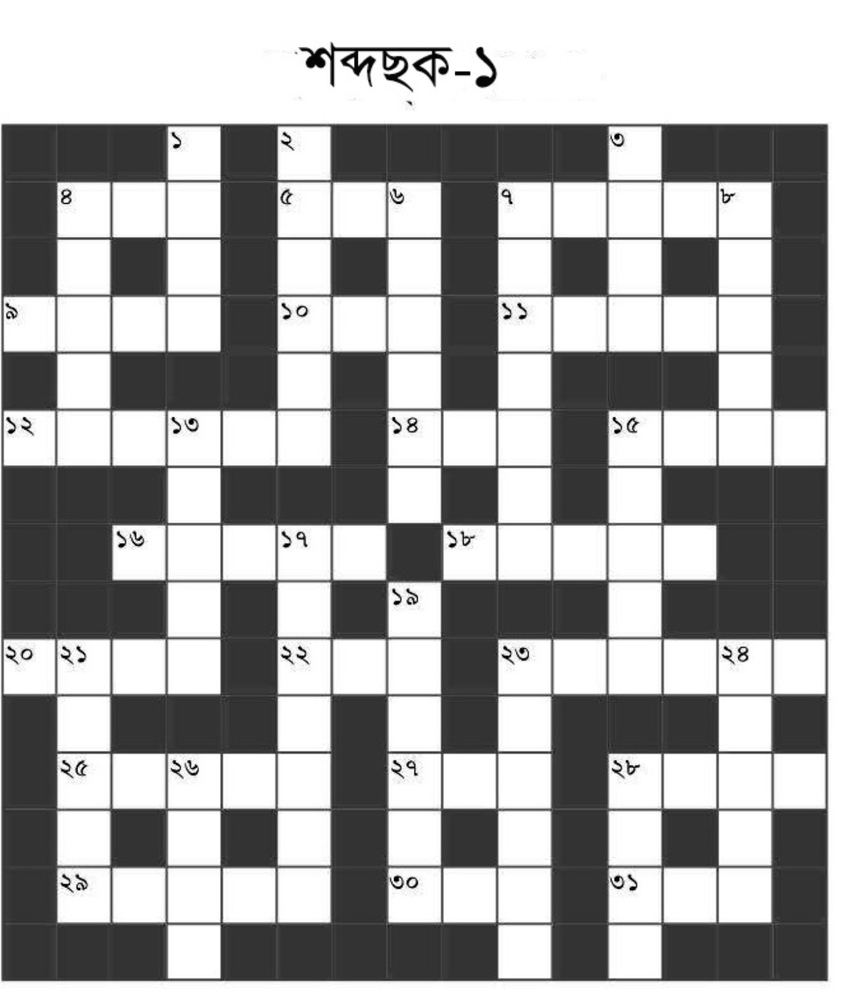

দেশ ডুবেছে দূর্নীতিতে নেতার পাতা ছকে,
রাজ্যবাসীর ঘুম উড়েছে দারুণ রকম ঠকে।
এমনি চোখে যায়না দেখা সেই ছকেরই দাগ
ছকের টাকায় মন্ত্রী সান্ত্রী সবার আছে ভাগ।
এরম অনেক ছকের কথা খুললে টিভি রোজ
পাবেন, তবে অন্য ছকের দিচ্ছি এখন খোঁজ।
এই ছকেতে নেই তো কোনো দূর্নীতিরই ছাপ,
অশ্রু কারোর ঝরবেনা আর হবেনা সেই পাপ।
শব্দ খুঁজুন, শব্দ বাছুন ছকের নিয়মমতো
পাশাপাশি উপরনীচে ঘর রয়েছে যত,
জীবনের সব ধাঁধা গুলো নাও যদি বা মেলে
এ ছক ধাঁধা মিলেই যাবে সঠিক শব্দ পেলে।
শব্দছকের মূল ছবিটি অপরিবর্তিত রাখা হয়েছে।
